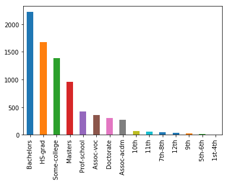
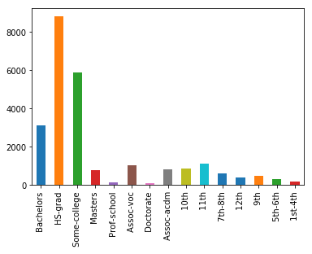
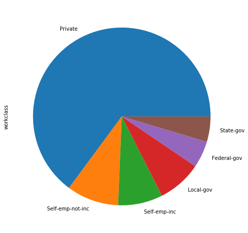
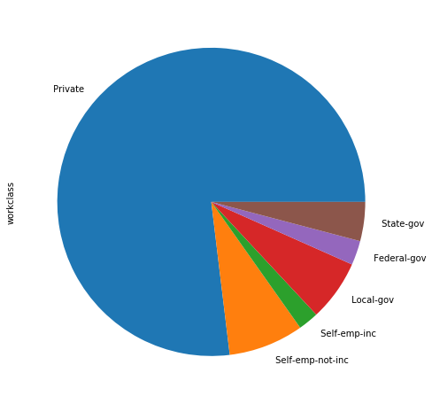
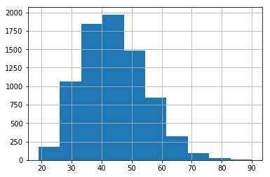

Communicating Results
Let's see how we can communicate findings with visualizations with the census income data.
import pandas as pd
%matplotlib inline
df_census = pd.read_csv('census_income_data.csv')
Let's create two dataframes to separate people who make above and below 50K.
df_a = df_census[df_census['income'] == ' >50K']
df_b = df_census[df_census['income'] == ' <=50K']
We can use bar graphs to compare the education levels reached in both groups.
ind = df_a['education'].value_counts().index
df_a['education'].value_counts()[ind].plot(kind='bar');

df_b['education'].value_counts()[ind].plot(kind='bar');

Notice the same index was used to keep the labels of the bar charts in the same order. Next, let's plot pie charts to compare what workclasses dominate in each group.
ind = df_a['workclass'].value_counts().index
df_a['workclass'].value_counts()[ind].plot(kind='pie', figsize=(8, 8));

df_b['workclass'].value_counts()[ind].plot(kind='pie', figsize=(8, 8));

Next, let's use histograms to plot the distribution of ages for each group.
df_a['age'].hist();

df_b['age'].hist();

df_a['age'].describe()
count 7841.000000
mean 44.249841
std 10.519028
min 19.000000
25% 36.000000
50% 44.000000
75% 51.000000
max 90.000000
Name: age, dtype: float64
df_b['age'].describe()
count 24720.000000
mean 36.783738
std 14.020088
min 17.000000
25% 25.000000
50% 34.000000
75% 46.000000
max 90.000000
Name: age, dtype: float64